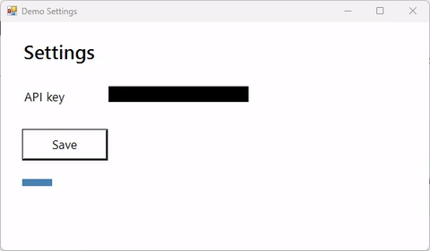

SCREENCAST-MCP / WORKFLOWS / REC 07
The whole edit in one call
REC 01 takes six edit calls, six re-encodes, and five intermediate files. pipeline takes the same steps, with the same options as each tool, and runs them as one ffmpeg process. The steps are plain JSON, so save them as your team's standard PR clip and re-run them on the next recording.
Record Demo Settings while I click Save, then in one go: hide the API key, trim to the save, box the Save button saying it hangs, and give me a GIF under 2 MB.
start_recording → find_text → pipeline (redact → trim → callout → export_gif). Paths are shortened; every value is from a real run.
- start_recording { "target": "window:Demo Settings", "fps": 15 }Then
stop_recordingwhen the repro is done.{ "sessionId": "rec-…", "region": { "width": 602, "height": 352 } } - find_text { "input": "rec-….mp4", "timestamp": 0.5, "query": "sk-[\\w-]+", "regex": true, "redact": true }Finding the secret is the one step that stays separate: its rectangles feed the pipeline.{ "matchCount": 1, "redactRegions": [{ "x": 152, "y": 121, "width": 196, "height": 22 }] }
- pipeline { "input": "rec-….mp4", "dryRun": true, "steps": [
{ "op": "redact", "regions": [{ "x": 152, "y": 121, "width": 196, "height": 22 }] },
{ "op": "trim", "start": 0.5, "end": 5 },
{ "op": "callout", "items": [ { "type": "box", … }, { "type": "text", "text": "Save hangs for 2.5 s", … } ] },
{ "op": "export_gif", "width": 480, "fps": 10, "maxBytes": 2000000 } ] }The plan: what each step became, and the fused ffmpeg command. Redact runs first, so it covers the whole clip; callout times are on the trimmed timeline.{ "steps": ["redact 1 region(s), box", "trim 0.5-5s: trim filter", "callout 2 item(s)", "export_gif (gif): second stage, size-budget ladder"], "processes": 2, "width": 602, "height": 352, "durationSec": 4.5 } - pipeline { …the same steps, without dryRun }One fused encode, then the GIF size ladder. 368 ms here, against six tool calls for REC 01.{ "outputPath": "pipeline-….gif", "animation": { "sizeBytes": 47020, "withinBudget": true } }

Steps run in order, and each sees the frame and timeline left by the steps before it: crop then redact means redact coordinates are in the cropped frame. export_preset or export_gif can only come last. Without one, the result is an mp4 at quality (default standard).